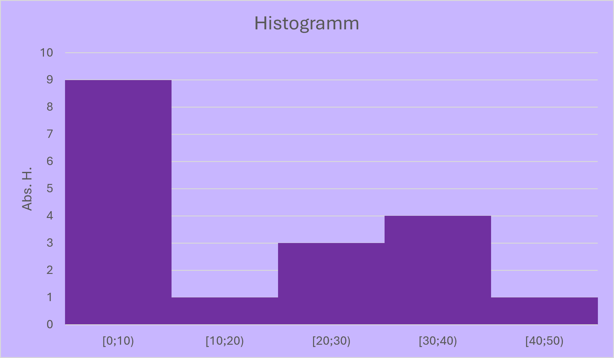

Terme
Gleichungen
Funktionen
Datenanalyse
Saeulen-, Stab-, Balken- und Kreisdiagramm
Haeufigkeitstabelle
| Merkmal | Absolute H. | Relative H. | Prozent | Winkel (Kreisdiagramm) |
|---|---|---|---|---|
| a | x | x | x | x |
| b | x | x | x | x |
| Total | y | 1 | 100% | 360 Grad |
Histogramm
Verglichen mit Saeulendiagramm usw. hat das Histogramm keine exakte Werte für die Saeulen
sondern ranges.
Das Histogramm gehört zum Merkmal stetig.
Für das braucht es Richtwerte und dessen Überprüfung an denen man sich orientieren kann,
damit man das Histogramm
"übersichtlich" erstellen kann.
Dabei ist \(n\) der Umfang
- Klassenanzahl bzw. Anzahl Saeulen (k)
- \(\sqrt{n} \approx k\)
- Klassenbreite (b)
- \(\dfrac{x_{max}-x_{min}}{k} \approx b\)
- Unterste Klassengrenze
- \(ukg \le x_{min}\)
- Überprüfung
- \(ukg + k * b > x_{max}\)
\(k\) runde ich selbst meistens auf die naechste ganze Zahl auf
\(b\) runde ich einfach damit es clean ist. Je nach Zahl runde ich auf oder ab.
Falls die Überprüfung nicht wahr ist, kann man \(k\) oder/und \(b\) erhöhen.
Vor der Erstellung des Histogramms, erstellt man noch eine Haeufigkeitstabelle mit Klassen.
Das macht es auch deutlich einfacher für das eigentliche Histogramm.
| Klassen | Abs. H. |
|---|---|
| [\(ukg\) ; \(ukg+b\)) | x |
| [\(ukg+b\) ; \(...\)) | x |
| [\(...\) ; \(...\)) | x |
| Total | \(n\) |
Dabei heisst "[", dass der Wert innerhalb dieser range ist und ")", dass der Wert nicht mehr dazugehört.
Wenn man das Histogramm zeichnet ist die y-Achse für die abs. H. und die x-Achse
für die Klassen.
Am Nullpunkt faengt es für die x-Achse mit dem UKG an und wird jeweils mit \(b\) erhöht.
Für die y-Achse faengt es mit 0 an.
Beispiel
Daten:
6, 39, 49, 19, 29, 20, 2, 5, 6, 7, 1, 8, 2, 5, 30, 25, 36, 37
Geordnet:
1, 2, 2, 5, 5, 6, 6, 7, 8, 19, 20, 25, 29, 30, 36, 37, 39, 49
Heisst:
\(x_{min} = 1\)
\(x_{max} = 49\)
\(n = 18\)
Richtwerte:
\(\sqrt{n} \approx 4.24\)
Ich nehme einfach 5, was denke ich meistens besser ist
als wenn ich 4 nehmen würde.
\(k = 5\)
\(\dfrac{49 - 1}{5} = \dfrac{48}{5} = 9.6 \approx b \)
Damit es cleaner ist nehme ich 10
\(b = 10\)
Mein UKG wird 0 sein, weil es mit einer Klassenbreite von 10
am meisten Sinn macht und
wahrscheinlich dadurch am übersichtlichsten ist.
\(ukg = 0\)
Dadurch habe ich all meine Richtwerte und überprüfe es.
\(0 + 5 * 10 > 49\)
Das geht auf, also kann ich mit diesen Werten die Haeufigkeitstabelle erstellen und danach
das Histogramm
| Klassen | Abs. H. |
|---|---|
| [0;10) | 9 |
| [10;20) | 1 |
| [20;30) | 3 |
| [30;40) | 4 |
| [40;50) | 1 |
| Total | 18 |

Boxplot
\(Q1 = \dfrac{0.5n + 1}{2}\)
\(Q2 = \dfrac{n + 1}{2}\)
\(Q3 = \dfrac{1.5n + 1}{2}\)
Wahrscheinlichkeit
Übungen
Glossar
Grundbegriffe (PDF)Disclaimer
Diese Webseite ist von mir selbst mit der Hilfe von KI für Darstellung und
Layout erstellt worden
Ich gebe aber nicht die Garantie dafür, dass alles korrekt ist
und dass man komplett auf das alles vertrauen kann.